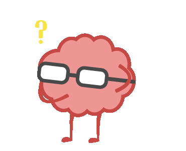

5 Study Tips for University and College Students
Dec 23 '21 • Written by Yassen Shopov
📖 11 minute read
From kindergarten all the way to your last assignment in university, you bump into new and distinct learning obstacles.
In the beginning, it was grasping entirely new concepts, such as reading, building passive and active memory, building habits. Then you moved over to the challenges of multi-tasking, having to retain focus, having to learn things even if you have no inherent interest or benefit from them. And then by the time you reach university, you most probably also need to juggle with a social life, a work-life, dealing with society’s expectations, and so on.
Point is, you keep on learning new things, but the ways you learn them are probably not very different than they were years and years ago. And even if they were relevant back then, there is little chance that they are the perfect study techniques that should be carrying you all your life.
Generally, the older we get, the less nimble we are at adapting new study strategies, even if there is quite some evidence showing that they are actually better.
When I went into university in 2019 for my Biomedical Engineering degree, I had quite a bit of old study habits that made me spend so much unnecessary time and effort in the wrong places. And since nobody really teaches you how to, well, learn effectively, it is very easy to keep grinding unnecessarily till you graduate. Thankfully, I ran into some really helpful articles and YouTube channels, mainly Ali Abdaal’s and Thomas Frank’s, that gave me a good idea of how to study much more effectively.
In this article, I will tell you about the 5 study tips that help me most during my degree in university.
1. Active Recall
Active Recall [ˈæktɪv rɪˈkɔːl] when you actively stimulate your memory for a piece of information. [1]
In order to better understand what active recall is, it is easier to understand what it isn’t.
Making notes and studying off them is a passive way of absorbing content. The questions and the answers are both there in front of you, and you instantly see the connection between all the concepts. It doesn’t really take any active effort on your part to get to the answer, and you are left with the feeling of a job well-done since you understand the information as of right now.
However, once I take your notes away from you, your understanding of the topic is likely to suffer. Now that there is some distance between the question and the answer to it, your brain actually needs to put in the work.
And that’s awesome.
Because this is where the real learning magic happens. Once your brain needs to put in some active effort to retrieve a given piece of information, it helps build a neural pathway in your cortex. Think of it as the same way your brain builds habits, reflexes, etc. The more your brain needs to go through a specific motion, the easier it gets, and the information starts to feel instinctual as if it has always been there.
So to put it into practical terms, you can practice active recall by turning your notes into a set of questions on the content. Yes, you can also provide the answers to them somewhere, but they shouldn’t be instantly visible. You have to work through the question first, put some effort into remembering, and then if you actually don’t know it, you’re allowed to look at the answer and learn the new material. Evidence shows that this method of learning, combined with using flashcards, can boost the speed of integrating new material and can enhance memories.
2. Time-Blocking
Now, this technique is much more common among the productivity spaces, but it has its place in studying as well.
Time blocking is the process of taking the 24 hours of a given day and dividing them into blocks of closely-related activities. It is very close to the general practice of scheduling events into your day, just taken a step further.
Some small tasks during the day can seem harder to accomplish if they are scattered randomly throughout it. This is because of the multi-tasking effect. Generally, it takes some amount of willpower to start a given task, and if you constantly have to switch between tasks of a different level of mental effort and focus, you will end up drained much faster.
Time-blocking helps in this by letting you couple a few tasks and their subtasks into coherent blocks. For example, you could have a Blog Writing block, like what I use right now, in which I do a couple of related tasks - writing all the paragraphs, writing some meta-information about the blog, designing the page, sharing it on social media, etc.
3. Plan for Buffer
If you can be sure about one thing about productivity, it is that a task has a much bigger chance of taking longer than expected, rather than shorter.
When you start using the previous concept, time-blocking, you may easily fall in the trap of overlooking all your time. When you put a 2 hour gym block right next to a 2 hour study block, you depend heavily on you being able to finish those tasks perfectly on time and being able to transition perfectly smoothly to the next one.
Which, especially if the two tasks require you to change setting, place, clothes, environment, can become impossible to start the next task perfectly on time.
This is where buffer time comes in handy.
Buffer time could be just a few minutes, or even an hour more of time added to a task. The main principle is to estimate how long a given task would take, and add some time to extend the time block, imagining an almost worst-case scenario of things not going your way. That could be - your bus not being on time, your computer being laggy, creativity not striking you the moment you sir down to write, etc. By adding buffer time to your schedule, you won’t be rushing through tasks as much, and you would limit the possibility of stuff going so wrong that your whole schedule goes off-track. This margin of error is crucial to a healthy schedule.
4. Get outside of your room
What could seem rather obvious for the more extroverted people can come as non-instinctual to the more introverted of us.
When you sit down in your room, it is very rarely a dedicated study space. It is usually also the place where you sleep, relax, sometimes eat, generally - the place where you don’t work. And as far as psychology goes, classical conditioning works very efficiently on humans, and the more we associate a given setting with a given task, the more likely we are to perform said task in said setting. This means that over time, it should be getting less and less natural for you to work I your own room, since you do all sorts of activities in there.
This is where the library, coffee shops, other people’s places, common rooms, become so useful in one’s studying. Since there is a constant feeling of novelty attached to those places you don’t visit as often, it almost feels fun to study there, and definitely feels more productive.
On top of that, you have the added bonus of not having all your distractions (fridge, bed, TV) right in front of you as you’re trying to study.
5. Coffee is not Water
Now, this line may seem absurd, but if you’re a coffee-enjoyer like myself, you’ll know how easy it is to go overboard with 1, 2, even 5 cups of coffee per day, mostly in an attempt to constantly boost your productivity. However, coffee is not water, and its effect on the organism as a stimulant shouldn’t be underestimated.
The caffeine in coffee truly does affect your mental and physical performance, and it’s the reason why athletes and students alike tend to take it in big quantities.
However, you quickly get desensitised to the effects of caffeine, and as with any other stimulant, you start needing it more and more to keep feeling the same effect. The withdrawal symptoms also aren’t pleasant.
This is why coffee should be used minimally, enough to keep you at your optimal study levels without burning you out. Also, generally caffeine remains in your bloodstream for far longer than you’d expect, and if you tend to have coffee later than 2 pm, it may explain the difficulties you may have falling asleep.
References
[1] What is active recall? How to use it to ace your exams. (2020, October 29). Brainscape Academy. https://www.brainscape.com/academy/active-recall-definition-studying/